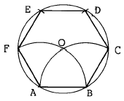
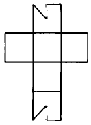
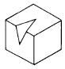
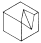
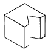
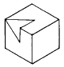
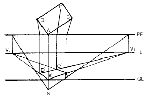

석공예기능사 (2004-07-18 기출문제)
1과목: 공예디자인
1. 평화, 안정, 신선, 생장 등의 추상적인 연상색은?
- 적색
- 황색
- 녹색
- 청색
(정답률: 알수없음)

2. 가장 가벼운 느낌을 주는 배색은?
- 귤색 - 노랑
- 연두 - 검정
- 빨강 - 파랑
- 청록 - 녹색
(정답률: 알수없음)
3. 도면에서 문자 크기의 기준은?
- 문자의 높이
- 문자의 넓이
- 문자의 굵기
- 문자의 대각선
(정답률: 알수없음)
4. 한 변을 알고 정6각형을 그리는 작도 중 순서상 제일 먼저 구해야 할 점은?

- F
- C
- O
- D
(정답률: 알수없음)
5. 형태의 변화조건에 해당되지 않는 것은?
- 명암에 따라 달라진다.
- 보는 방향에 따라 달라진다.
- 원근에 따라 달라진다.
- 눈의 높이에 따라 달라진다.
(정답률: 알수없음)
6. 수직선은 다음 보기 중 어떠한 느낌을 주는가?
- 안정감, 고요함
- 강직함, 고결함
- 불안정감, 운동감
- 우아하고 관능적느낌
(정답률: 알수없음)
7. 주택, 실내장식물, 기구, 집기 등과 같이 영구적 혹은 반영구적인 것에 적합한 조화는?
- 유사적 조화
- 대비적 조화
- 형상의 조화
- 대조의 조화
(정답률: 알수없음)
8. 서로 성질이 반대되는 것끼리 늘어놓아 강한 효과를 나타내었을 때 관계되는 것은?
- 변화
- 대비
- 주조
- 비례
(정답률: 알수없음)
9. 고려의 공예분야 중 두드러지게 성행하지 않았던 것은?
- 도자 공예
- 목죽 공예
- 금속 공예
- 칠 공예
(정답률: 알수없음)
10. 아르누보와 직접관계 없는 것은?
- 청춘양식
- 시세션
- 신예술양식
- 고딕양식
(정답률: 알수없음)
11. 빛에 의해서 물체가 백색으로 보이는 경우는?
- 일부 반사, 일부 흡수
- 모두 흡수
- 모두 반사
- 모두 통과
(정답률: 알수없음)
12. 색의 혼합 방법 중 두 개의 색을 나란히 놓아서 혼합효과를 보는 방법은?
- 색광혼합
- 회전혼합
- 감산혼합
- 병치혼합
(정답률: 알수없음)
13. 먼셀(Munsell)색채계의 기본 색상수는?
- 5
- 6
- 8
- 12
(정답률: 알수없음)
14. 색상환에서 서로 마주보이는 편에 있는 색끼리의 대비는?
- 연변대비
- 색상대비
- 명도대비
- 보색대비
(정답률: 알수없음)
15. 연필의 강도 즉, 진한정도는 모든 연필에 표시되어 있는 데 H연필과 B연필의 차이를 옳게 설명한 것은?
- H는 수가 클수록 단단하고, B는 수가 클수록 무르고 진하다.
- H는 수가 클수록 무르며 진하고, B는 수가 클수록 단단하다.
- H는 수에 관계없이 진한 연필이고, B도 수에 관계없이 단단하고 흐리다.
- H나 B 모두 수가 표시되어 있으나 강도와는 무관한 것이다.
(정답률: 알수없음)
16. 형상 기호설명이 올바른 것은?
- 빔: 정육면체 표시
- ø : 반지름 표시
- R : 지름표시
- t : 두께표시
(정답률: 알수없음)
17. 다음 설명 중 틀린 것은?
- 정12면체의 한 면은 정6각형이다.
- 정 8면체의 한 면은 정3각형이다.
- 정20면체의 한 면은 정3각형이다.
- 정 6면체의 한 면은 정4각형이다.
(정답률: 알수없음)
18. 그림과 같은 전개도의 입체도형은?





(정답률: 알수없음)
19. 리-디자인(Re-Design)의 개념은?
- 스케치를 완료하고 투시도 작성
- 제품의 디자인 개선
- 신제품 디자인 개발
- 판매를 위한 디자인 개발
(정답률: 알수없음)
20. 파랑색에 흰색을 혼합하였을 때 결과는 어떻게 되는가?
- 색상이 변한다.
- 명도는 낮아지고 색상은 변한다.
- 채도는 낮아지고 명도는 높아진다.
- 명도는 낮아진다.
(정답률: 알수없음)
2과목: 석공예재료
21. 색채조절을 하는 목적과 비교적 거리가 먼 것은?
- 일의 능률을 높이기 위함
- 심신의 피로를 막기 위함
- 사고나 재해를 감소시키기 위함
- 색의 아름다움을 보다 강조하기 위함
(정답률: 알수없음)
22. 다음 그림에서 PP와 GL은?

- 화면, 기선
- 화선, 시선
- 시선, 기선
- 정점, 시점
(정답률: 알수없음)
23. 화성암을 구성하는 광물의 알갱이가 크든 작든간에 결정질로 구성되어 있을 때의 조직은?
- 조립질
- 완정질
- 중립질
- 세립질
(정답률: 알수없음)
24. 변성암의 대표적인 것은?
- 석회암
- 사암
- 대리석
- 현무암
(정답률: 알수없음)
25. 암석의 생성원인에 의한 분류에 속하지 않는 것은?
- 화성암
- 규산질암
- 수성암
- 변성암
(정답률: 알수없음)
26. 석재의 내부 성분이 용해되서 일어나는 피해의 원인은?
- 불연성(不燃性)
- 내구성(耐久性)
- 내화성(耐火性)
- 풍화성(風化性)
(정답률: 알수없음)
27. 석재를 경석, 준경석, 연석으로 나누는 기준은?
- 경도
- 색상
- 비중
- 크기
(정답률: 알수없음)
28. 대리석 재료의 특성 중 맞는 것은?
- 물에 강하다.
- 산류에 약하다.
- 열(熱)에 강하다.
- 압축강도가 약하다.
(정답률: 알수없음)
29. 석재의 구비 조건으로 맞지 않은 것은?
- 가공하기 쉬운 것
- 내구성과 강도가 작을 것
- 겉모양이 아름다울 것
- 가격이 저렴할 것
(정답률: 알수없음)
30. 석재의 강도 중 가장 큰 것은?
- 인장 강도
- 휨 강도
- 전단 강도
- 압축 강도
(정답률: 알수없음)
31. 공예재료로 사용할 석재의 성질을 나열한 것이다. 관계가 없는 것은?
- 성인
- 내구력
- 강도
- 외관미
(정답률: 알수없음)
32. 연마석과 연마지의 번호는 무엇에 의해 결정되는가?
- 무게에 의해 결정
- 연마재의 색깔에 의해 결정
- 연마재 용도에 따라 결정
- 연마재의 곱기에 따라서 결정
(정답률: 알수없음)
33. 다음 중 모오스(Mohs) 경도계로 10도에 해당되는 것은?
- 금강석(diamond)
- 방해석(calcite)
- 활석(talc)
- 석고(gypsum)
(정답률: 알수없음)
34. 인공 대리석과 자연석과의 차이점은?
- 인공대리석이 더 아름답고 가치가 있다.
- 천연대리석이 아름답고 자연미가 있다.
- 인공대리석은 강하고 천연대리석은 아주 약하다.
- 천연대리석은 값이 싸고 인공대리석은 값이 비싸다.
(정답률: 알수없음)
35. 우리 나라 국토면적의 약 32%에 해당하는 지역에 분포하여 가장 많이 생산되며, 내구성과 강도가 강하여 건축 내외장재를 비롯하여 조각재료, 석탑, 석등, 비석 등의 석공예물 제작에 널리 사용되는 것은?
- 대리석(Marble)
- 오석(Black sand stone)
- 화강암(Granite)
- 안산암(Andesite)
(정답률: 알수없음)
36. 갱소기계를 가장 정확하게 설명한 것은?
- 판재를 일정한 규격으로 재단하는 기계
- 제품에 구멍을 뚫는 기계
- 판재를 원형 등 특수형태로 가공하는 기계
- 대형 판재를 한번에 100장 내외로 할석하는 기계
(정답률: 알수없음)
37. 석재의 피막재로 많이 사용하는 것은?
- 에폭시
- 아크릴계 수지
- 메탄올
- 폴리에스테르
(정답률: 알수없음)
38. 석재의 착색 관련 약품 중 희석재로 사용되지 않는 것은?
- 메틸에틸케톤
- 피마자유
- 메틸알콜
- 사이크로핵산
(정답률: 알수없음)
39. 도드락망치의 눈(날)의 수 중 해당되지 않는 것은?
- 10개
- 16개
- 25개
- 100개
(정답률: 알수없음)
40. 다음 중 석재의 접착재료로 가장 적합한 것은?
- 아크릴계수지
- 에폭시
- 백시멘트
- 아세톤
(정답률: 알수없음)
3과목: 석공예
41. 다보탑과 관계가 없는 내용은?
- 불국사 내에 있다.
- 단순하며 정교한 탑이다.
- 통일신라 때 만들었다.
- 석굴암과 같은 시기에 만들었다.
(정답률: 알수없음)
42. 다음 중 한국의 석공예에 가장 큰 영향을 미친 문화는?
- 근대 기독교 문화
- 조선시대의 유교 문화
- 삼국시대의 불교 문화
- 한(漢)의 북방문화
(정답률: 알수없음)
43. 물기가 많거나 미끄러지기 쉬운 장소에 시공할 재료로서 적합한 표면 가공은?
- 연마가공
- 3회물갈기
- 7회물갈기
- 화염가공
(정답률: 알수없음)
44. 다음 중 석재의 조직방향에 의해 결정되는 것은?
- 비중(比重)
- 면적(面積)
- 종류(種類)
- 강도(强度)
(정답률: 알수없음)
45. 형태를 잡을 때 주로 사용되는 석공예 수공구는?
- 양날망치
- 외날망치
- 망치와 정
- 도두락망치
(정답률: 알수없음)
46. 잔다듬에 쓰는 공구는?
- 양날 망치
- 저석
- 휠
- 도드락망치
(정답률: 알수없음)
47. 석재의 절삭(切削)작업에 사용하는 공구는?
- 다이아몬드톱
- 드릴
- 에어툴
- 핸드그라인더
(정답률: 알수없음)
48. 다음 연마에 관한 사항 중 틀린 것은?
- 입자가 치밀한 돌일수록 광택이 난다.
- 연마숫돌은 숫돌번호가 클수록 거칠다.
- 연마는 마지막 단계이므로 취급에 주의를 요한다.
- 맨 나중에는 왁스 등 광택제를 쓰기도 한다.
(정답률: 알수없음)
49. 석조각이 끝난 후 깨끗하게 마무리 하려고 할 때 가장 적당한 작업은?
- 소금물로 닦는다.
- 염산으로 닦는다.
- 식물성 기름으로 닦는다.
- 수도물로 닦는다.
(정답률: 알수없음)
50. 작업의 안전관리를 위하여 작업장에는 무엇을 설치하는가?
- 주의 표시의 설치만이 필요하다.
- 위험방지 설비의 설치가 필요하다.
- 작업하기에 편리한 시설만 필요하다.
- 편리한 전동공구나 수공구의 구비만이 필요하다.
(정답률: 알수없음)
51. 작업환경의 안전 및 보호를 위한 방법으로 가장 적합한 것은?
- 정리정돈 보다 안전교육만 받으면 된다.
- 정리정돈 보다 안전작업의 순서만 익히면 된다.
- 정리정돈 보다 안전도 검사가 우선적이다.
- 기계나 수공구의 계획적인 정리정돈이 필요하다.
(정답률: 알수없음)
52. 압축공기의 사용 목적이 안전수칙에 위배되는 것은?
- 기구의 조작에 사용
- 이동용 공구에 사용
- 인체에 묻은 오물을 제거하기 위해서 사용
- 먼지를 털 목적으로 기계에 대하여 사용
(정답률: 알수없음)
53. 작업환경에서 색채의 심리적 효과는?
- 온도감각에만 영향을 미친다.
- 원근감, 중량감에만 영향을 미친다.
- 작업자의 감정에만 영향을 미친다.
- 원근감, 중량감, 기호성, 감정 등에 영향을 미친다.
(정답률: 알수없음)
54. 마제석기를 사용한 시대는?
- 구석기
- 신석기
- 청동기
- 철기
(정답률: 알수없음)
55. 90° 보다 작은 각의 명칭은?
- 평각
- 후각
- 둔각
- 예각
(정답률: 알수없음)
56. 측정기구의 관리방법이 아닌 것은?
- 눈금의 끝면이나 모서리가 상하지 않도록 한다.
- 기름을 묻혀 보관한다.
- 일정한 온도에서 보관한다.
- 정기적으로 검사하여 정확성을 유지한다.
(정답률: 알수없음)
57. 고열 불꽃을 분사하며 독특한 가공면을 얻는 작업은?
- 혹두기
- 연마작업
- 버너작업
- 잔정다듬
(정답률: 알수없음)
58. 채석을 위한 기초 조사가 아닌 것은?
- 암석의 성분조사
- 암반의 구조조사
- 암맥의 배치상태
- 암석의 채취방법
(정답률: 알수없음)
59. 다음 중 가장 큰 판재를 절삭할 수 있는 절단기는?
- 양엽절단기
- 대형원형툽
- 갱소
- 다엽절단기
(정답률: 알수없음)
60. 연마작업의 목적이 아닌 것은?
- 공작물의 치수를 정확하게 한다.
- 상품의 가치를 높인다.
- 접착면의 강도를 높인다.
- 표면에 광택을 낸다.
(정답률: 알수없음)